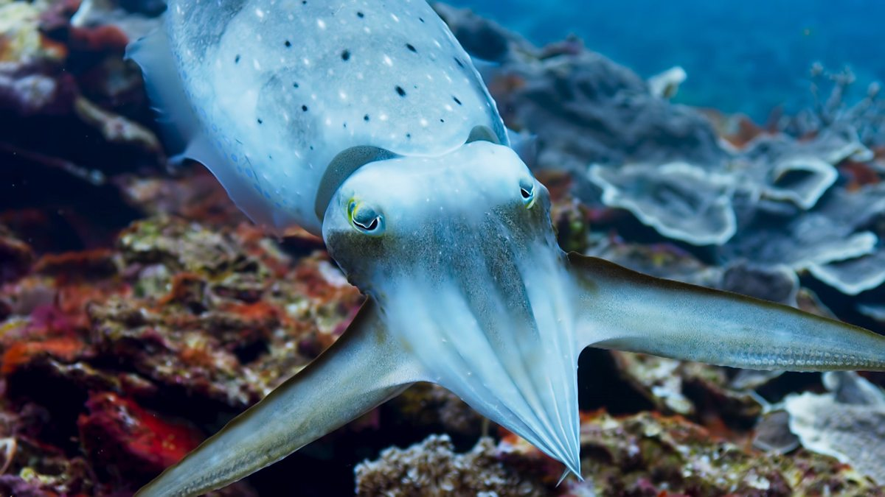
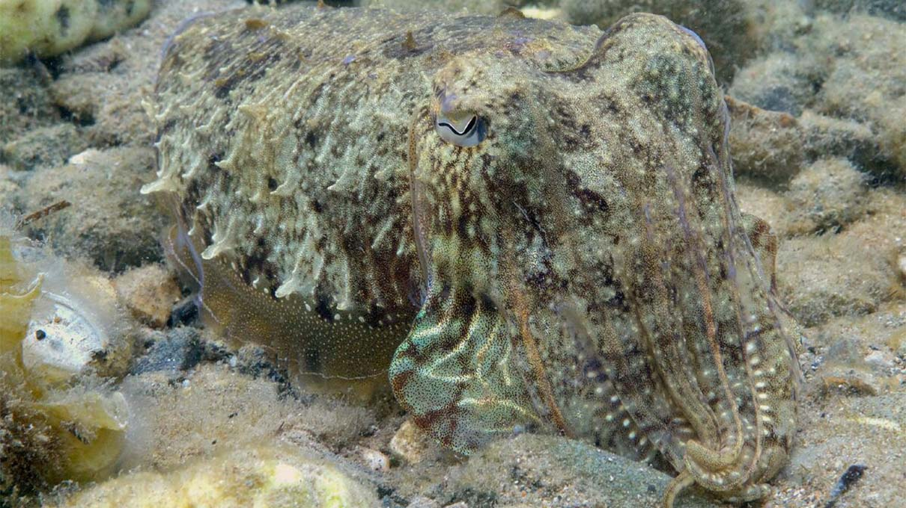

Cuttlefish are marine invertebrate animals belonging to the Cephalopod class (which also includes squid, octopuses, and nautiluses).Despite their common name, cuttlefish are not fish but molluscs. There are over 120 species of cuttlefish currently recognized. Their mantle (the main body region above their eyes) houses their cuttlebone, reproductive organs, and digestive organs. A pair of flat fins span the entire length of their mantles, which they undulate rapidly when swimming. Their head is located at the base of their mantle, with two large eyes on either side and sharp beak-like jaws in the center of their arms. They have eight arms and two longer tentacles for capturing prey that can be retracted completely into the body.
Domain: Eukarya
Kingdom: Animalia
Phylum: Mollusca
Class: Cephalopoda
Order: Sepiida
Family: Sepiidae
Genus: Sepia
Species: officinalis
Cuttlefish have an internal shell (cuttlebone), large W-shaped pupils, eight arms and two tentacles furnished with suckers, with which they secure their prey.
Unlike the vertebrate eye, no blind spot exists for the cuttlefish, because the optic nerve is positioned below the retina. Along with being able to see everywhere, Cuttlefish possess an internal structure called the cuttlebone, which is composed of calcium carbonate, to provide the cuttlefish with buoyancy. Each species has a distinct shape, size, and pattern of ridges or texture on the cuttlebone. The blood of a cuttlefish is an unusual shade of green-blue. The blood is pumped by three separate hearts.
Common cuttlefishes are masters of disguise. Their highly specialized array of color-changing structures allow them to blend themselves perfectly into their backgrounds. This also lets them often sneak up on prey and then shoot out their tentacles at lightning speed to capture them. They use their tentacles’ suckers to hold their prey while they bring it back towards their beak.
The family Sepiidae, which contains all cuttlefish, inhabits tropical and temperate ocean waters. They are mostly shallow-water animals, although they are known to go to depths of about 600 m (2,000 ft). They have an unusual biogeographic pattern: they are present along the coasts of East and South Asia, Western Europe, and the Mediterranean, as well as all coasts of Africa and Australia, but are totally absent from the Americas.
Cuttlefish are extremely intelligent. They change appearance to accomplish a goal, such as pretending to be the opposite gender during mating (large males win against smaller ones usually so small males camoflauge to look female. Oddly enough females find this more attractive)
Cephalopod consumption and particularly cuttlefish consumption has increased dramatically over the past century. Small cuttlefish are widely considered a delicacy and have the highest commercial value. This is because of their high protein content. As consumption increases, the number of cuttlefish caught must also increase to meet the demand. If the trend continues the population of cuttlefish could face a drastic reduction.